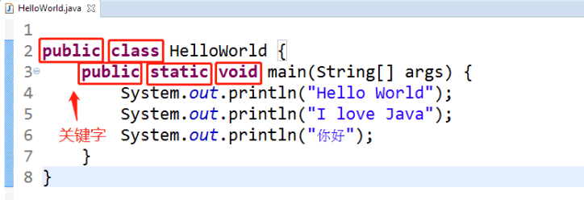

首页 > 编程笔记
Java关键字一览表
Java 关键字是指 Java 语言预先定义好的，有指定意义的标识符，是程序的核心组成。
简单来说，Java 程序就是“关键字 + Java类库 + 开发者自定义的标识符”：
例如，观察下面的代码：
Java 关键字可以表示一个基本数据类型，可以表示流程控制，可以作为类和方法的修饰符等，但是不能作为包名、类名、方法名、参数名、变量名，这些概念在后续的章节都会介绍。Java 关键字全部为小写，在 Eclipse 环境中，字体会自动加粗加黑，如下图所示，方框标记的都是关键字。
Java 关键字以及它们各自的含义如下表所示。
简单来说，Java 程序就是“关键字 + Java类库 + 开发者自定义的标识符”：
- 关键字来构建程序的核心骨架；
- Java类库提供程序要调用的方法；
- 开发者自定义的标识符来指定程序完成相关工作。
例如，观察下面的代码：
public class HelloWorld {
public static void main(String[] args) {
System.out.println("Hello World");
System.out.println("I love Java");
System.out.println("你好");
}
}
其中，pubilc、class、static、void 为关键字；main、System.out.println 为 Java 类库方法（main 是一个特殊方法，表示主线程）；HelloWorld、"Hello World"、"I love Java"、"你好"就是开发者自定义的标识符了。Java 关键字可以表示一个基本数据类型，可以表示流程控制，可以作为类和方法的修饰符等，但是不能作为包名、类名、方法名、参数名、变量名，这些概念在后续的章节都会介绍。Java 关键字全部为小写，在 Eclipse 环境中，字体会自动加粗加黑，如下图所示，方框标记的都是关键字。

图 1 Java 关键字
图 1 Java 关键字
Java 关键字以及它们各自的含义如下表所示。
| 关键字 | 含 义 |
|---|---|
| abstract | 用于声明抽象类或抽象方法 |
| assert | 用于进行断言检查 |
| boolean | 表示布尔类型 |
| break | 用于跳出循环或 switch 语句 |
| byte | 表示字节类型 |
| case | 用于定义 switch 语句中的分支 |
| catch | 用于捕获异常 |
| char | 表示字符类型 |
| class | 用于定义类 |
| const | 已废弃，不再使用 |
| continue | 用于继续循环的下一次迭代 |
| default | 在 switch 语句中定义默认分支 |
| do | 用于定义 do while 循环 |
| double | 表示双精度浮点类型 |
| else | 在条件语句中定义否定分支 |
| enum | 用于定义枚举类型 |
| extends | 用于类的继承 |
| final | 用于声明不可更改的类、方法或变量 |
| finally | 用于定义无论是否发生异常都执行的代码块 |
| float | 表示单精度浮点类型 |
| for | 用于定义 for 循环 |
| goto | 已保留关键字，但在 Java 中不使用 |
| if | 用于定义条件语句 |
| implements | 用于类实现接口 |
| import | 用于导入类或包 |
| instanceof | 用于检查对象是否是特定类型的实例 |
| int | 表示整数类型 |
| interface | 用于定义接口 |
| long | 表示长整数类型 |
| native | 用于声明本地方法 |
| new | 用于创建新对象 |
| package | 用于定义包 |
| private | 限定访问权限为私有 |
| protected | 限定访问权限为受保护 |
| public | 限定访问权限为公共 |
| return | 用于从方法返回值 |
| short | 表示短整数类型 |
| static | 用于声明静态成员 |
| strictfp | 用于强制浮点数运算符遵循 IEEE 754 标准 |
| super | 引用父类的构造函数、方法或成员 |
| switch | 用于多重选择语句 |
| synchronized | 用于同步方法或代码块 |
| this | 引用当前对象 |
| throw | 用于抛出异常 |
| throws | 用于声明方法可能抛出的异常 |
| transient | 用于声明字段不被序列化 |
| try | 定义包含可能抛出异常的代码块 |
| void | 表示无返回值 |
| volatile | 用于声明变量在多线程环境中可见 |
| while | 用于定义 while 循环 |
| true | 布尔值之一，代表真。虽然它是一个字面量，但有时也被认为是关键字，因为它不能被用作一个标识符 |
| false | 布尔值之一，代表假，有时也被视为关键字 |
| null | 代表空引用，有时也被视为关键字 |
关注公众号「站长严长生」，在手机上阅读所有教程，随时随地都能学习。内含一款搜索神器，免费下载全网书籍和视频。

微信扫码关注公众号